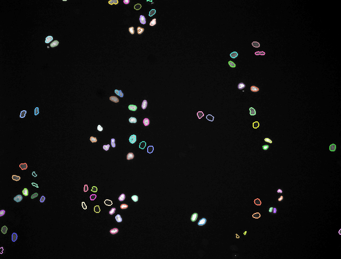
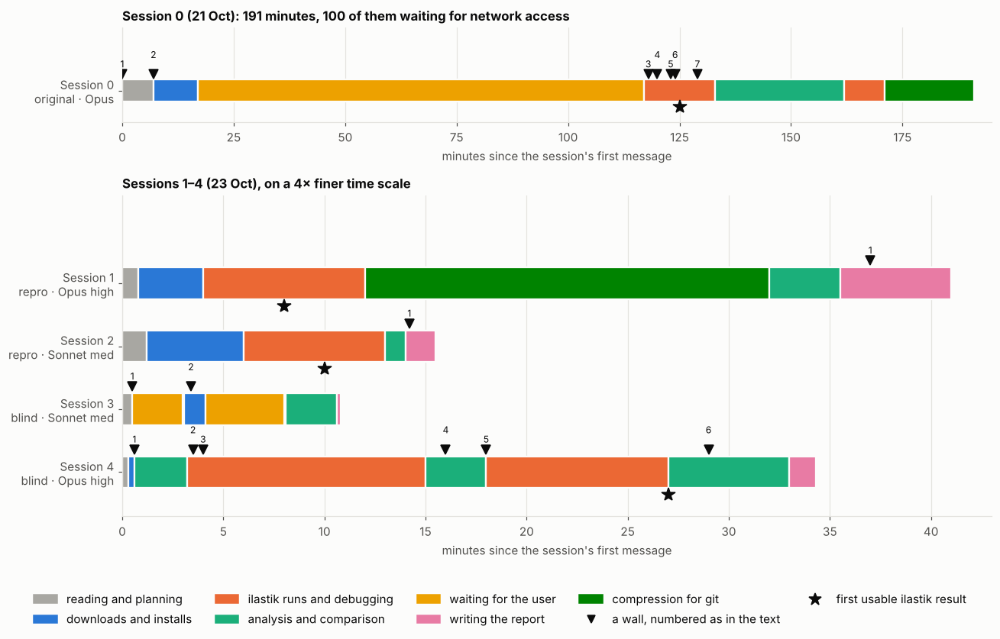
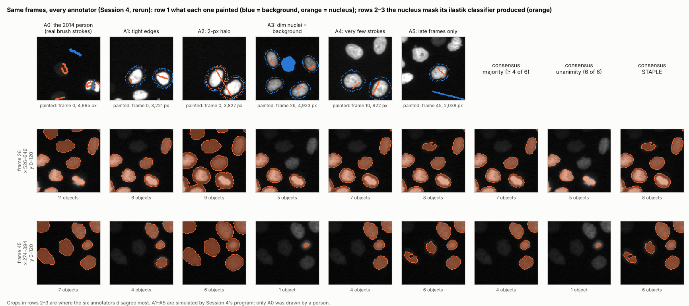

Session 06 “Benchmarking”
Can an AI agent run, and rerun, a bioimage analysis?
One Claude session ran ilastik's MitoCheck cell-tracking example from scratch. Four more sessions tried again: two with that session's notes, two with only the question and the data. Here is what happened.
Read the comparison The original runGroup work for the GloBIAS 2026 workshop; not an official GloBIAS site.

In one minute
- With the documentation, reproduction is easy. Both reproduction runs finished without help and hit none of the original walls.
- Results repeat, except one step. Pixel classification and ilastik 1.5 tracking came out identical; ilastik 1.3.3post3 tracking renumbered two lineages and moved 113 pixels between touching nuclei.
- Without it, agents redesign the experiment. Both blind sessions built a consensus study with simulated annotators instead of running the example.
- The first judgement decides the outcome. One blind session used ilastik headless within a minute; the other decided ilastik could not run and replaced it.
- Consensus is not sufficient as ground truth. Both blind sessions concluded this; with three biased annotators, majority vote outvoted the one real annotator.
- Every session overstated something that a second look caught.

How the five sessions spent their time. The original run waited 100 minutes for network access; the reproductions spent most of theirs compressing files for git.

The consensus question, made visible: one real annotator (A0) and five simulated ones on the same frames. Only the real one finds the dim nuclei, so majority vote drops them.
Projects
ilastik agent benchmark
The original run compared with two reproductions and two blind runs: timelines, walls, reproducibility down to the pixel, and how each “annotator” annotated.
ilastik MitoCheck run
One agent running ilastik's 2014 MitoCheck example in 2026: every step, error, fix and result, with scripts and data to rerun it.
Workshop
Group 5's working space for Assignments I and II and the presentation: discussion threads, LLM benchmark entries, consensus experiments, meeting notes.
Shape Analysis Field Guide
A plain-language walk through the Shape Analysis 101 tutorial: turning outlines of cells and worms into numbers you can compare.
The assignments
Assignment I · LLM benchmark
Choose a bioimage analysis question and a dataset, write one prompt, ask at least three different LLMs, and judge their proposals as a professional bioimage analyst would.
Assignment II · Consensus
Combine several independent annotations of the same dataset into a reference annotation, and record the rule used. Key question: is consensus sufficient to define ground truth?